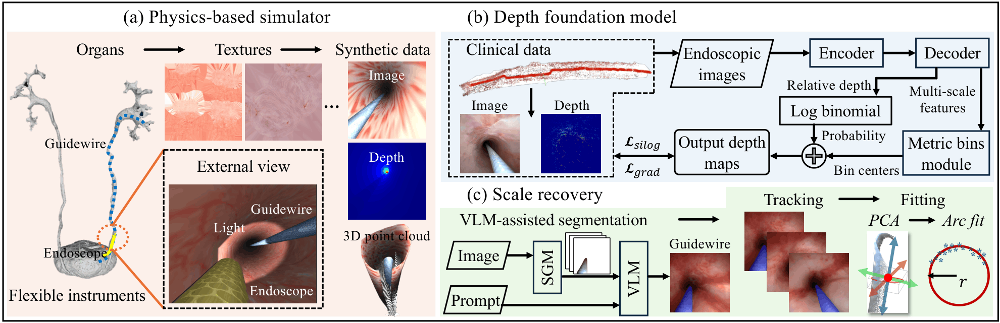

Under review at IEEE Transactions on Biomedical Engineering
Real-time Monocular Depth Estimation in Ureteroscopy for Endoscope Reconstruction and Localization
1Brigham and Women's Hospital, Harvard Medical School 2NYU Grossman School of Medicine 3NYU Tandon School of Engineering

Abstract
Objective: Ureteroscopy is a minimally invasive procedure for diagnosing and treating urinary tract calculi and tumors. Computer vision-based navigation systems can enhance surgical outcomes by registering the endoscope with pre-operative computed tomography (CT). We propose a monocular depth estimation framework for 3D reconstruction and endoscope localization to facilitate accurate CT registration. Methods: A physics-based simulator was developed for synthetic training data generation, modeling flexible endoscope and ureteral guidewire motion to produce synthetic surgical scenes with realistic textures and geometrically accurate structures. A vision foundation model was fine-tuned using both synthetic and clinical data to improve generalization. To recover the scale from monocular depth estimation without additional sensors, we leveraged the geometric prior of the guidewire and employed a vision-language model (VLM) to track it over time. Geometric constraints were applied to the guidewire region within the depth map to achieve scale recovery. Results: Evaluations on synthetic, phantom, and clinical datasets demonstrated a depth estimation RMSE of 1.64 mm with scale recovery at real-time speeds of 22 fps. The framework achieved sub-millimeter 3D reconstruction accuracy across all datasets and endoscope localization errors below 0.4 mm on clinical datasets. Conclusion: The proposed framework enables accurate, real-time monocular depth estimation, 3D reconstruction, and endoscope localization in ureteroscopy without additional sensors. Significance: This work advances intraoperative navigation for ureteroscopy by providing a scalable, sensor-free depth estimation solution with millimeter-level accuracy, with broad implications for computer-assisted and robotic endoscopic procedures.
Explore
Explore UroDepth
Explore the key components and results of UroDepth, including physics-based simulation, synthetic data generation, monocular depth estimation, and downstream applications.
Explore the ureteroscopy simulation environment and its capabilities for realistic scene generation.
Visualize synthetic endoscopic images and their corresponding depth, segmentation, and optical flow maps.
Explore qualitative depth estimation results, ground-truth comparisons, and novel view synthesis.
View 3D reconstruction results and estimated endoscope trajectories.
01
Simulation Environment
The environment where the synthetic sequences and their ground-truth annotations are generated.
Interactive Simulation Environment
Ureteroscopy simulation workflow. The simulation consists of two stages: guidewire placement in the ureter, followed by navigation of the flexible ureteroscope, during which endoscopic images and ground-truth depth maps are recorded by the virtual RGB-D camera at the endoscope tip.
02
Synthetic Dataset
Synchronized multimodal ground truth, and the range of scene and rendering configurations used in the dataset.
Multimodal Ground Truth
RGB
Depth
Segmentation
Optical Flow
Scene and Appearance Diversity
Simple Texture + Guidewire
Baseline appearance with the guidewire in view.
Realistic Texture + Guidewire
More realistic appearance.
Realistic Texture + Camera Effects
Vignette, depth of field, field of view, and varied guidewire appearances.
Realistic Texture + Camera Effects + Motion Blur
Vignette, motion blur, depth of field, field of view, and varied guidewire appearances.
Bubbles
Air bubbles drifting through the irrigation fluid.
Obstacles
Objects partially blocking the view of the lumen.
03
Depth Estimation
Qualitative evaluation of monocular depth estimation through ground-truth comparisons on synthetic data and novel view synthesis on both synthetic and clinical data.
Depth Estimation Results
Qualitative comparisons of predicted and ground-truth depth maps across continuous synthetic endoscopic sequences.
Sequence 1
Input images, ground-truth and predicted depth maps, and their corresponding 3D representations.
Sequence 2
Input images, ground-truth and predicted depth maps, and their corresponding 3D representations.
Novel View Synthesis
Qualitative novel view synthesis results on clinical and synthetic endoscopic sequences.
Novel View Synthesis Demo
Visualization of synthesized endoscopic views across continuous camera trajectories.
04
3D Reconstruction & Localization
Qualitative visualization of recovered 3D structures and endoscope poses on clinical and synthetic endoscopic sequences.
Clinical Data
Recovered 3D structure and endoscope poses from clinical endoscopic sequences.
Synthetic Data
Recovered 3D structure and endoscope poses from synthetic endoscopic sequences.
Publication
Citation
This paper is currently under review. A BibTeX entry will be posted here after publication.